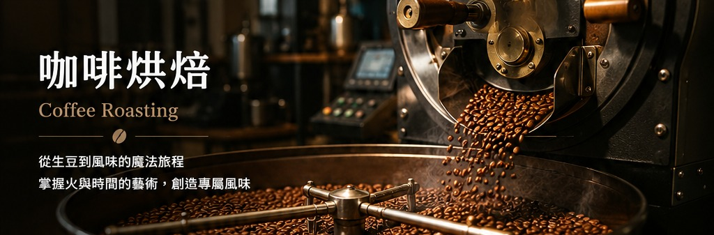

烘焙機透過火力、熱風、滾筒轉速與時間控制，使咖啡生豆逐步完成脫水、梅納反應、焦糖化反應及發展期，形成不同的香氣與風味。
一、什麼是咖啡烘焙？
咖啡烘焙是透過熱能、時間與氣流控制，使生豆中的水分、糖、酸、蛋白質與香氣前驅物發生物理與化學變化，形成可被感知的香氣、酸質、甜感、醇厚度與餘韻。
建立香氣
透過梅納反應、焦糖化與熱裂解，形成花香、果香、堅果、焦糖與巧克力等風味。
調整酸甜平衡
控制各階段時間與熱能，使酸質、甜感與厚實度達到目標。
提高穩定性
記錄曲線並配合杯測，可重複建立同一批豆子的烘焙設定。
二、咖啡烘焙完整流程
生豆投入 Charge
依豆種與烘豆機設定入豆溫，開始吸收熱能。
轉折點 TP
豆溫先下降，再於最低點後回升，通常約出現在入豆後 1–2 分鐘。
脫水／黃化
水分逐漸蒸發，豆色由綠轉黃，青草味轉為穀物香。
梅納反應
胺基酸與還原糖反應，形成堅果、吐司、餅乾與烘烤香氣。
焦糖化反應
糖類裂解與聚合，甜感、蜂蜜、焦糖與黑糖調逐漸形成。
一爆 FCs
水蒸氣與氣體壓力釋放，出現類似爆米花聲。
發展期 DT
從一爆開始到下豆，決定酸甜平衡、厚實度與焙度走向。
二爆 SCs
纖維裂解、油脂外移，巧克力、煙燻與深焙苦甜感提高。
下豆冷卻 Drop
快速冷卻以停止持續反應，避免焙度繼續加深。
三、完整烘焙曲線圖
曲線從入豆溫開始，依序標示 TP、脫水結束、黃化、梅納、焦糖化、一爆、發展期與下豆。BT 是豆溫，ET 是環境溫，ROR 是升溫率。
曲線代表的意義
BT 是豆子受熱與熟成的主線；ET 反映烘豆機內熱能；ROR 是每分鐘升溫速度，用來判斷熱能是否平穩。
是否能看出風味走向？
可以大致預測。梅納較長通常甜感、堅果與厚實度增加；焦糖化較完整會帶蜂蜜與焦糖感；發展期短偏花果酸，較長則偏巧克力與厚實。
四、烘焙期間的主要化學反應
| 階段 | 主要變化 | 常見風味 |
|---|---|---|
| 脫水反應 | 水分蒸發、細胞結構開始膨脹 | 青草、穀物感逐漸下降 |
| 黃化期 | 豆色由綠轉黃，梅納反應開始 | 麥芽、穀物甜香 |
| 梅納反應 | 胺基酸與還原糖反應，形成香氣前驅物 | 堅果、吐司、餅乾、烤麵包 |
| 焦糖化反應 | 糖類裂解與聚合 | 蜂蜜、焦糖、奶油糖、黑糖 |
| 一爆 | 水蒸氣與氣體壓力釋放，細胞結構爆裂 | 花香、果香、明亮酸質 |
| 熱裂解／二爆 | 纖維裂解、油脂外移、逐漸碳化 | 巧克力、煙燻、炭焙、苦甜 |
五、ROR 升溫率判讀
理想 Declining ROR
平順下降，常見風味乾淨、甜感佳、層次清楚。
Crash
一爆後急墜，容易香氣扁平、發展不足。
Flick
尾段反彈，容易燥感、刺激感與苦澀。
Baked
ROR 長時間過平，風味可能呆滯、無活力。
六、Agtron 焙度值
Agtron 數值越高代表顏色越淺，數值越低代表焙度越深。數值可輔助描述焙度，但仍需搭配杯測判斷。
花香、茶感、柑橘
花果香、莓果
果酸與甜感平衡
焦糖、蜂蜜、堅果
巧克力、可可、厚實
煙燻、焦糖苦甜
炭燒、苦味明顯
七、曲線與風味走向
| 曲線特徵 | 可能風味走向 |
|---|---|
| 脫水期過短 | 容易出現生味、草味或內外熟度不均 |
| 脫水期過長 | 香氣可能變弱，風味較沉悶 |
| 梅納期較長 | 甜感、堅果、烘烤與厚實度增加 |
| 焦糖化較完整 | 蜂蜜、焦糖、黑糖與圓潤甜感提高 |
| 發展期偏短 | 花果香明亮，但可能尖酸或發展不足 |
| 發展期較長 | 巧克力、厚實度與焙火調增加 |
| ROR 平穩下降 | 風味較乾淨、甜感與層次較完整 |
提醒：曲線只能預測趨勢，真正的風味判斷仍需搭配杯測，並考量產區、品種、處理法、含水率與密度。
八、常見烘焙缺陷
| 缺陷 | 可能原因 | 杯測表現 |
|---|---|---|
| Underdeveloped 發展不足 | 一爆後發展時間過短或熱能不足 | 草味、尖酸、甜感弱 |
| Baked 烘焙呆滯 | ROR 長時間過平、反應拖太久 | 風味無活力、層次少 |
| Scorched 表面焦灼 | 初期火力或鍋溫過高 | 焦苦、燒焦味 |
| Tipped 豆尖燒焦 | 熱風或傳導熱過強 | 煙燻、苦澀、刺口 |
| Crash 一爆後失速 | 一爆前後降火過多 | 平淡、香氣扁平 |
| Flick 下豆前暴衝 | 尾段熱能控制不佳 | 燥感、雜味、苦澀 |
九、資料來源與參考資料
本教材內容參考下列公開專業資源整理：
- Specialty Coffee Association（SCA）— Coffee Skills Program、Coffee Standards
- Coffee Roasters Guild（CRG）相關烘焙教育資料
- World Coffee Research（WCR）公開研究與感官資料
- Coffee Quality Institute（CQI）公開教育資源
圖表來源：本網頁之烘焙流程圖、烘焙曲線、ROR 示意與 Agtron 圖表均由「給好咖啡 Kaffa98 Coffee」自行繪製與整理。
聲明：本教材為公開資料之教育性整理，並非 SCA、CQI、CRG 或 WCR 官方出版教材。正式認證或專業評鑑，請以相關機構最新標準文件為準。
圖片說明： 第一章烘焙機圖片為「給好咖啡 Kaffa98 Coffee」教材示意圖。